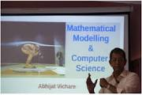
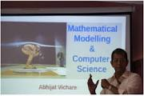
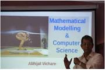
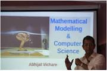

2015


 



Association for Computing Machinery
Chitkara University
ACM student chapter organised a workshop on Ethical Hacking ,”Hack X Ploit” on 3-4th November,2015. Around 200 students were trained by Mr.Rahul Tyagi, AVP Luciedus Techonologies and India’s topmost hacker. In this workshop students acknowledged a complete knowledge of basic networking and ethical hacking.This workshop aimed at giving students a basic knowledge of hacking and how they could protect one’s system against hazardous effects. Hacking has been a part of computing for almost five decades and it is a very broad discipline, which covers a wide range of topics. The workshop was an enriching experience for the students and they were amazed to see the scope and practical implications of Hacking in our day to day life. At the end of the workshop certificates were provided to the students.Top two students were selected for the next level of workshop. Students showed keen interest in attending more advanced workshops like this in future.
ACM Student Chapter organized industrial visit to Semi Conductor Laboratory, Mohali on 30th September 2015. Only 2 of our students (Rajat Sharma and Shubham Singla) got a chance to visit the site. In the first section, they went to Class 1 Zone, where they were shown how the fabrication of a wafor takes place which gave them the idea about the initial step for an IC production and how the base layer deposition, electrical layer deposition and sacrificial removal process takes place. In the second section students were taken to the R&D Department. Here they came to know about various techniques to design an IC through VHDL. Next they were taken to de-ionised water plant where they were the process to de-ionise the water and to bring down the resistivity of the water. Lastly they were taken to class 100 they were shown the packaging process of an IC by soldering or by manual installment of a wafor the package. The head of department also told them how they planned to upgrade the fab after IBM backed out the deal and how SCL was undergoing an upgrade to produce chips of 0.18 micrometers from tower semiconductor, Israel. The students interacted with the officials and gained a lot of knowledge which will be useful for them in their academic.
ACM Student Chapter organized CS Coach, a Programming Workshop for second year students of Department of Computer Science and Engineering on 25th July, 2015. Mr. Iqbal Singh, Sr R&D Engineer, Synopses conducted the hands-on session on C Programming from the viewpoint of programming competitions taking place all over the globe and especially ACM ICPC. The expert introduced the need of logic building in engineering students and motivated them to explore their potential to compete with country’s leading programmers who take part in National and International level Hackathon. 130 enthusiastic students and programming geeks participated in the workshop. The workshop is a part of a series of events that will be organized twice a month for the shortlisted participants to boost their zeal to program and excel in the field of Computer Science. All the students really appreciated the contents that were discussed, they realized that interactions likes these can help them improve their skills.
ACM Student Chapter in collaboration with HackerEarth conducted Code Pirates, Season 2 of open book programming challenge on 15th March, 2015. Code pirates saw more than 192 young innovators from various countries hack their way through intense competition . Participants were allowed to work on multiple tracks and challenges in parallel, although they needed to indicate which challenges they applied for. Top three positions were held by 1. Adam Richardson (Canada) 2. kmcode (Japan) 3. Bhavesh Munot (India) The highest purpose of the organisation is to attract the best developers worldwide. It was also an excellent opportunity to get in contact with highly motivated developers and to establish network with likeminded people and discuss ambitious ideas outside daily work environment.
ACM Student Chapter organized interaction session on “Empowering Engineers with Technical Skills and Corporate Challenges” on 13th April, 2015. Mr. Rohan Saha (Manager, PWC) and Mr. Mandeep Babra (Team Lead, Sapient), the alumni of Chitkara University of 2003-2007 Batch, interacted with 4th and 6th semester students of CSE and ECE. The Speakers enlightened the participants with industrial insights and experiences of their own. The session inspired students to open forum and understand the industrial challenges and how to deal with them, which shall be useful for them in their professional careers. Students showed an enthusiastic approach towards the event. They were keen to ask a lot of questions related to career, technical skills, professional growth, and many more. The talk made students explore a part of parallel computing, helping them both academically and professionally.
ACM Student Chapter in collaboration with HackerEarth conducted Code Pirates, Season 3 of open book programming challenge on 2nd May, 2015. The overnight challenge broke the barriers of borders between countries and brought the top most programmers of the world at a united platform to compete online. The initiative to practise programmings skills of the buddying engineers at Chitkara University touched the sky with 193 developers from India, Japan, Vietnam, Singapore, Ukraine, and Gulf participated in the challenge. Detail of winners are 1. Bohdan Pryshchenko (Ukraine) 2. Lam Nguyen (Vietnam) 3. Ankur (India) With focused intensity, Code Pirates aim to spur innovation through various creativity initiatives and sustain the successful outcomes via careful management practices.A heartiest congratulations to all the winners.Keep up with your work and talent.
The ground realities of India and its CS higher education pose unique challenges. For the past year and half, an effort has been on to develop a model curriculum focused on a few sample courses. Towards this end, the current workshop focuses on a hands on approach towards an ACM-IEEE CS2015 style curriculum development that is relevant to the Indian context. The first session of the workshop was conducted by Mr.Madhavan Mukund (Dean of Studies and a professor of Computer Science at Chennai Mathematical Institute) .He is also the President and Member of Indian Association for Research in Computing Science and the President of Association for Computing Machinery India Council.The second session was delivered by Abhijat Vichare (fellow at the Persistent Computing Institute, Persistent Systems Ltd.). He has worked in the GCC system internals at IIT Bombay, and has been a faculty at the CS Department, University of Pune. These initial efforts have developed the basic framework and noted a number of potential pitfalls in this adaptation process. The key next step is to involve our academia into the process.